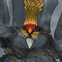

- 8/8
- 維修公告(8/9 12:00實施)
非常感謝您的使用。
這裡是「Fate/Grand Order」營運團隊。
為了「Dead Heat・夏日競賽！ ～夢與希望的伊絲塔盃2017～」的開始，將於下述的期間實施臨時維修。
維修中無法遊玩「Fate/Grand Order」。
維修之後猜測可能會有因連線集中，導致感到遊戲的動作延遲的情況。
屆時還請多加嘗試。
在維修開始前，麻煩請結束關卡及戰鬥。
※若有在關卡及戰鬥進行中開始維修的話，可能會有無法正常結束或不能領取報酬的情況。
■時間
2017年8月9日(三) 12:00～17:00(預定)
※維修結束的預定時間可能會有前後差異。
▼應用程式的更新
・維修結束後，請進行應用程式的更新。
（Android、iOS）
最新的版本如下。
Android：【Ver.1.27.1】
iOS：【Ver.1.27.0】
※請務必在Google Play、App Store、au遊戲更新。
請注意不要解除安裝。
※在Google Play沒顯示更新鍵的話，請執行清除Google Play的快取。
1.從主畫面點選單鍵，選擇「設定」
2.「應用程式」→選擇「Google Play商店」
3.選擇「清除快取」
注意）請勿點選「解除安裝更新」。
※選單的顯現可能因客戶端而讓操作上有些微差異。
▼遊戲的更新
1.期間限定活動「Dead Heat・夏日競賽！ ～夢與希望的伊絲塔盃2017～」的實施
2.聖晶石召喚(期間限定)「Dead Heat・夏日競賽！ ～夢與希望的伊絲塔盃2017～Pick Up召喚(每日交替)」的實施
3.期間限定「全部曜日關卡的AP消耗1/2宣傳活動」的結束
4.期間限定「大成功＆極大成功發生率3倍宣傳活動」的結束
▼問題的修正
1.一部份Servant的寶具演出會有未正常顯示情況的問題修正
※對象Servant如下。
・
2.一部份Servant的語音清單會有未正常顯示情況的問題修正
※對象Servant如下。
・
3.一部份圖像的顯示問題修正
4.一部份文字的錯字漏字修正
▼遊戲的修改
1.一部份Servant的寶具等級變更(8/9追記)
※對象Servant如下。
※隨著設定調整修改記載。
※只有文字的變更，寶具效果並無變更。
・ (寶具等級提升後)
(寶具等級提升後)
(變更前) A++
(變更後) A+
・ (寶具等級提升後)
(寶具等級提升後)
(變更前) E～A++
(變更後) E～A
・
(變更前) E～A++
(變更後) E～A
・ (寶具等級提升後)
(寶具等級提升後)
(變更前) A++
(變更後) A+
・(寶具等級提升後)
(變更前) A++
(變更後) EX
・
(變更前) A++
(變更後) A+
・ (寶具等級提升後)
(寶具等級提升後)
(變更前) A++
(變更後) A+
・ (寶具等級提升後)
(寶具等級提升後)
(變更前) A++
(變更後) A+
・ (寶具等級提升後)
(寶具等級提升後)
(變更前) A++
(變更後) A+
・ (寶具等級提升後)
(寶具等級提升後)
(變更前) A++
(變更後) A+
・
(變更前) A++
(變更後) A
・
(變更前) A++
(變更後) A
2.在能輸入文字的畫面中，如果輸入特定的特殊文字，變成反映無效(8/9追記)
※對象輸入文字畫面如下。
・支援名的變更畫面
・隊伍名的變更畫面
・訊息變更畫面
・名稱變更畫面
3.各種UI及圖像的調整
對上述維修感到抱歉，會向對象的玩家做出以下對應。
【對象】
於2017年8月9日(三) 11:59前有遊玩過「Fate/Grand Order」的所有玩家
【對應內容】
・聖晶石5個
【配布方法】
配發至禮物箱
【配布期間】
2017年8月10日(四) AM3:00～2018年1月31日(三) 22:59
非常抱歉麻煩到正在使用的玩家。
今後也請多多指教「Fate/Grand Order」。